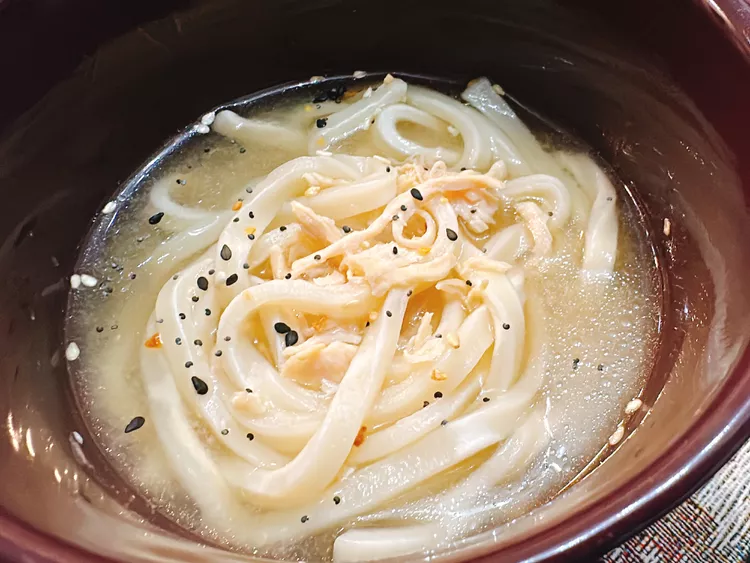

Miso Chicken Noodle Soup

Description
This recipe creates an udon with miso broth topped with rotisserie chicken.
The recipe should take about 15 minutes to complete, and only takes a handful of ingredients.
Ingredients
- Water
- Frozen udon noodles
- Rotisserie chicken, shredded
- White miso paste
- Everything bagel seasoning
Steps
- Boil water over medium high heat, then add udon noodles and cook until softened.
- Add the rotisserie chicken, turn the heat to low, then remove 2-3 tablespoons of water.
- Stir miso paste into the removed water until it is smooth, then mix into noodles. Cook for a few minutes.
- Ladle into bowls, and top with everything bagel seasoning.
Home